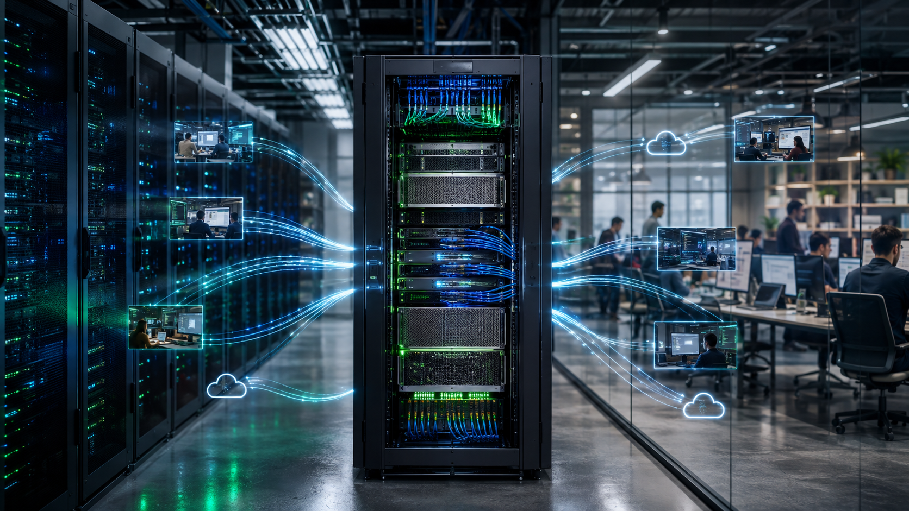
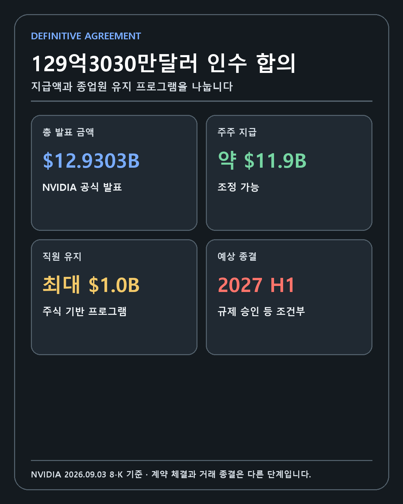
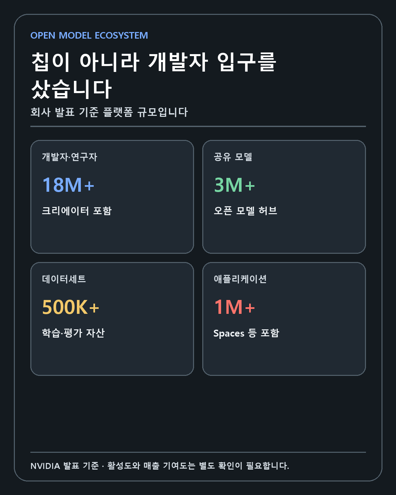
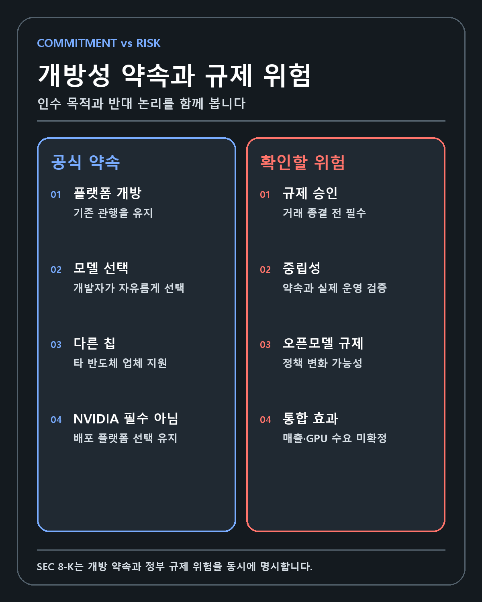
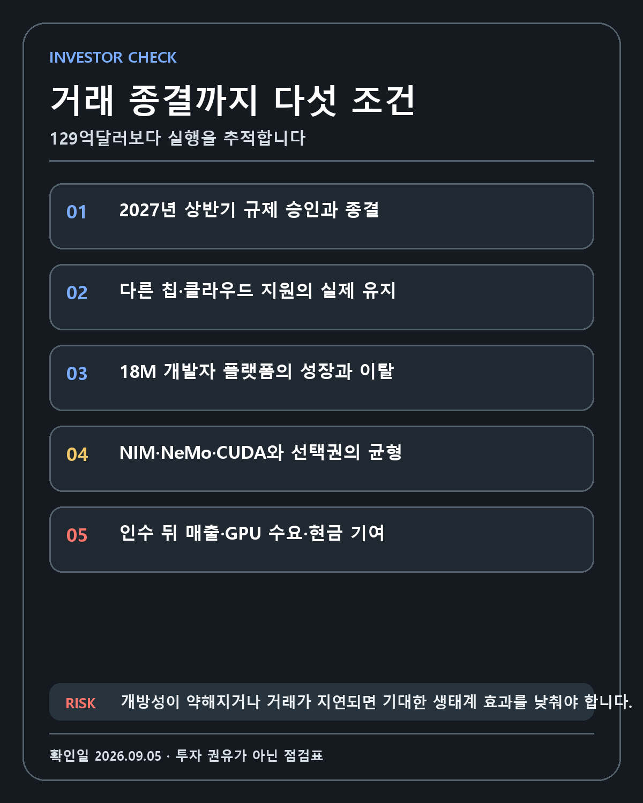

NVIDIA · OPEN MODEL ECOSYSTEM
NVIDIA의 Hugging Face 인수 분석: 129억3030만달러가 오픈모델 생태계와 GPU 해자에 미치는 영향
인수 보도는 최종 계약으로 바뀌었지만 거래 종결은 아직 남았습니다. NVIDIA가 GPU 이후 모델 발견과 배포의 입구까지 넓히면서 왜 개방성을 지켜야 하는지 분석합니다.
FIVE-LINE ANSWER
NVIDIA는 Hugging Face를 총 129억3030만달러에 인수하기 위한 최종 계약을 체결했습니다. 약 119억달러는 주주 지급, 최대 10억달러는 직원 유지 프로그램이며 2027년 상반기 종결이 예상됩니다. Hugging Face에는 1800만명 이상의 개발자와 300만개 이상의 모델이 모여 있습니다. NVIDIA는 플랫폼 개방과 다른 반도체 업체 지원을 약속했으며, 이 중립성이 유지돼야 네트워크 효과도 남습니다. 대상 회사의 재무정보와 GPU 매출 기여는 아직 공개되지 않았습니다.

검증 기준일: 2026년 9월 5일 KST
작성자 관점: NVIDIA 장기 보유자가 기술·해자·창업자·성장률·현금흐름 순서로 거래를 검증한 리서치
보도에서 최종 계약으로 바뀐 사건
NVIDIA가 Hugging Face 인수를 위한 최종 계약을 체결했습니다. 2026년 8월 말에는 129억달러 안팎의 인수 협상과 합의 가능성을 다룬 보도가 나왔지만 NVIDIA와 Hugging Face의 공식 확정 발표가 없었습니다. 당시에는 인수 보도와 협상이라고 표현하는 것이 맞았습니다.
9월 3일 공개된 NVIDIA 공식 발표와 SEC Form 8-K는 정보 상태를 바꿨습니다. NVIDIA는 9월 2일 Hugging Face를 인수하기 위한 definitive agreement를 체결했습니다. 총 발표 금액은 129억3030만달러입니다. 거래는 2027년 상반기에 종결될 것으로 예상되지만 규제 승인과 관례적인 종결 조건이 남아 있습니다.
이 사건을 정확히 다루려면 세 단계를 나눠야 합니다.
- 8월의 인수 보도와 협상 단계
- 9월 2일 최종 계약 체결 단계
- 규제 승인 이후 거래 종결 단계
현재는 두 번째 단계입니다. 인수는 공식적으로 합의됐지만 완료되지는 않았습니다. 이 구분은 단어 선택의 문제가 아니라 투자 위험의 시간축입니다. 규제 심사, 직원 유지, 개발자 이탈, 플랫폼 정책과 통합 비용은 거래 종결 전후에 달라질 수 있습니다.
거래 가격 129억3030만달러의 구성
NVIDIA 블로그는 총 금액을 12,930,300,000달러로 발표했습니다. 숫자가 지나치게 정밀해 보이지만, SEC 공시는 세부 구성을 보다 실용적으로 나눕니다. Hugging Face 주주에게 지급할 인수대가는 약 119억달러이며 일부 조정 조건이 있습니다. NVIDIA에 합류하는 Hugging Face 직원을 위한 주식 기반 유지 프로그램은 최대 약 10억달러입니다.
| 구분 | 공개된 금액·조건 | 해석 |
|---|---|---|
| 공식 총 발표액 | $12.9303B | 주주 지급과 직원 유지 프로그램을 포함한 표현 |
| 주주 지급 인수대가 | 약 $11.9B | 조정 가능, 최종 지급액은 거래 종결 자료 확인 필요 |
| 직원 유지 프로그램 | 최대 약 $1.0B | 합류 직원 대상 주식 기반 보상 |
| 계약 체결 | 2026년 9월 2일 | 공식 8-K의 사건 발생일 |
| 예상 종결 | 2027년 상반기 | 규제 승인 등 조건부 전망 |
이 구조에서 직원 유지 프로그램을 단순 부가비용으로 보면 안 됩니다. Hugging Face의 핵심 자산은 물리 서버보다 사람과 커뮤니티, 개발자 신뢰, 모델·데이터 유통 경험입니다. 창업진과 엔지니어가 떠나고 개발자 커뮤니티가 분산되면 플랫폼의 가치가 빠르게 약해질 수 있습니다. 최대 10억달러의 주식 기반 프로그램은 인수대금과 별도로 핵심 인력을 붙잡으려는 장치입니다.
UNKNOWN도 큽니다. 공개 문서에는 Hugging Face의 매출, 영업손실, 총마진, 클라우드 비용, 현금흐름과 유료 기업 고객당 매출이 없습니다. 따라서 129억3030만달러가 매출의 몇 배인지, 손익분기까지 얼마나 더 투자해야 하는지 공식 자료만으로 계산할 수 없습니다. 가격이 비싸다거나 싸다고 단정할 재무 분모가 부족합니다.

NVIDIA가 사는 것은 코드 저장소가 아니라 AI 개발의 입구입니다
NVIDIA가 밝힌 플랫폼 규모는 다음과 같습니다.
| 생태계 지표 | 회사 발표 기준 |
|---|---|
| 개발자·연구자·크리에이터 | 1,800만명 이상 |
| 공유 모델 | 300만개 이상 |
| 데이터세트 | 50만개 이상 |
| 애플리케이션 | 100만개 이상 |
| 이용 기업 | 20만개 이상 |
Hugging Face는 모델을 내려받는 웹사이트 하나가 아닙니다. 연구자가 모델과 데이터세트를 공개하고, 개발자가 라이브러리로 불러오며, 기업이 모델을 비교·평가하고, Spaces에서 애플리케이션을 시험하는 장소입니다. PyTorch, Transformers, Diffusers, safetensors와 여러 추론 프레임워크가 이 생태계와 연결돼 있습니다.
AI 컴퓨팅 수요의 시작점은 반도체 구매 주문이 아닙니다. 개발자가 어떤 모델을 선택하고 어느 프레임워크로 학습하며 어떤 클라우드와 가속기에서 배포할지를 정하는 순간부터 시작됩니다. Hugging Face는 이 결정 과정의 앞단에 있습니다. NVIDIA가 플랫폼을 인수하면 어떤 모델이 빠르게 확산되는지, 기업이 어떤 작업을 평가하고 배포하는지, 개발자가 어디에서 불편을 느끼는지 더 가까이 볼 수 있습니다.
이 정보가 곧 독점 데이터나 자동 매출을 뜻하는 것은 아닙니다. 개인정보와 기업 비공개 저장소, 경쟁법과 플랫폼 중립성에 대한 엄격한 통제가 필요합니다. 사용자가 플랫폼 운영자를 신뢰하지 못하면 비공개 모델과 데이터가 다른 곳으로 이동할 수 있습니다. 정보 접근은 가치가 될 수 있지만 신뢰를 잃으면 반대로 부채가 됩니다.

인수 전부터 이어진 NVIDIA·Hugging Face 연결
이번 거래는 관계가 없던 두 회사가 갑자기 만난 사건이 아닙니다. 2023년 NVIDIA와 Hugging Face의 공식 협력 발표는 개발자가 Hugging Face 플랫폼에서 NVIDIA DGX Cloud를 사용해 대규모 생성형 AI 모델을 학습하고 조정하도록 연결하는 계획을 담았습니다.
이후 NVIDIA는 Hugging Face에 수백 개의 오픈모델과 데이터세트를 기여했다고 밝혔습니다. NIM은 여러 오픈모델을 NVIDIA GPU에 최적화된 추론 마이크로서비스로 배포하는 경로를 제공합니다. NeMo는 대규모 학습과 미세조정, 데이터 처리와 모델 운영을 연결합니다. TensorRT-LLM과 CUDA는 실제 추론 성능과 비용을 최적화합니다.
기존 협력 구조를 단순화하면 다음과 같습니다.
모델 발견·공유(Hugging Face) → 학습·미세조정(NeMo·DGX Cloud) → 추론 최적화(TensorRT-LLM·NIM) → GPU·네트워크·시스템 수요(NVIDIA)
인수의 목적은 이 경로를 더 긴밀하게 만드는 데 있을 가능성이 큽니다. 가능성이라고 표현하는 이유는 NVIDIA가 세부 제품 통합 계획이나 매출 목표를 아직 공개하지 않았기 때문입니다. 기술적으로 연결된다는 사실과 경제적 수익률이 높다는 판단은 별도의 검증을 요구합니다.
개방성을 유지하겠다는 공식 약속
NVIDIA는 Hugging Face가 전체 AI 생태계를 위한 열린 플랫폼으로 남을 것이라고 밝혔습니다. 개발자는 원하는 모델과 프레임워크, 클라우드, 추론 서비스 제공자, 컴퓨팅 플랫폼을 선택할 수 있습니다. Hugging Face에서 모델을 만들거나 배포할 때 NVIDIA 컴퓨팅을 의무적으로 사용할 필요가 없다고 적었습니다.
SEC 8-K는 약속을 더 직접적으로 표현합니다. NVIDIA는 기존 관행에 맞춰 Hugging Face 플랫폼을 개방된 상태로 유지하고, 모델 제작자와 개발자가 원하는 모델과 데이터세트를 올리고 내려받게 하며, 다른 반도체 공급자를 계속 지원하겠다고 약속했습니다.
이 약속은 규제 심사를 통과하기 위한 문구이면서 거래의 사업적 전제이기도 합니다. Hugging Face의 네트워크 효과는 서로 다른 이해관계자가 한 플랫폼을 공동 인프라로 받아들일 때 생깁니다. AMD ROCm, 인텔 가속기, 구글 TPU, AWS Trainium, 여러 클라우드와 추론 공급자가 참여할 수 있어야 모델 공급자도 한곳에 모입니다.
NVIDIA가 자사 하드웨어 전환을 서두르며 검색 노출, 성능 비교, 배포 옵션에서 경쟁사를 차별하면 단기 매출에는 도움이 될 수 있습니다. 장기적으로는 모델 제작자와 개발자가 중립적인 대체 플랫폼을 찾게 만듭니다. Hugging Face의 가치가 줄면 NVIDIA가 얻으려던 생태계 접점도 약해집니다.
반대로 중립성을 실질적으로 보장하면 NVIDIA는 경쟁 하드웨어를 허용하면서도 오픈모델 생태계 전체의 성장에서 이익을 얻을 수 있습니다. 모델 수와 사용량이 늘면 학습·미세조정·추론 계산량이 증가합니다. 그 계산이 모두 NVIDIA에서 실행되지 않더라도 NVIDIA는 성능과 생태계 통합, 공급 역량으로 점유율을 경쟁할 수 있습니다. 플랫폼을 닫는 것보다 생태계를 키우는 편이 GPU 시장의 총수요를 넓힐 수 있습니다.

기술 해자를 다섯 층으로 확장하는 거래
NVIDIA의 해자를 GPU 칩 하나로 설명하면 부족합니다. 이번 거래가 종결될 경우 해자는 다섯 층으로 넓어질 수 있습니다.
1. 연산 하드웨어
GPU, CPU, NVLink와 네트워크 장비는 모델 학습과 추론의 물리적 기반입니다. 공급 규모와 시스템 설계 능력은 대규모 AI 팩토리에서 여전히 중요합니다.
2. 개발 소프트웨어
CUDA와 라이브러리는 개발자가 NVIDIA 하드웨어를 사용하기 쉽게 만듭니다. 기존 코드와 인력의 학습비용이 전환비용으로 작동합니다.
3. 시스템과 클라우드
DGX, HGX, 랙스케일 시스템과 DGX Cloud는 칩을 실제 운영 가능한 인프라로 묶습니다. GPU만 공급하는 것보다 고객의 구축 시간을 줄입니다.
4. 모델 배포 도구
NIM, NeMo와 TensorRT-LLM은 모델을 학습하고 최적화해 서비스에 올리는 과정을 단축합니다. 하드웨어 성능이 개발자의 배포 경험으로 연결되는 층입니다.
5. 모델 발견과 커뮤니티
Hugging Face는 개발자가 어떤 모델을 선택할지 결정하는 입구입니다. 이 층이 더해지면 NVIDIA는 계산 자원을 공급한 뒤가 아니라 모델 선택 이전부터 개발자 여정에 참여합니다.
이 구조가 성공하면 NVIDIA는 칩을 구매한 고객만 상대하지 않고 모델을 탐색하는 개발자부터 관계를 시작합니다. 그러나 각 층이 강하게 연결될수록 플랫폼 중립성, 경쟁법과 데이터 거버넌스 책임도 커집니다.
규제와 정책 위험
NVIDIA는 8-K에 오픈소스 AI 규제 위험을 별도 항목으로 적었습니다. 각국 정부가 AI 모델의 개발, 학습, 공개, 배포, 접근과 이전에 새로운 제한을 부과할 수 있으며, 이로 인해 Hugging Face가 제공하는 모델과 데이터세트가 제한되고 운영비와 규제 대응 비용이 늘 수 있다고 설명했습니다.
특히 세계적으로 많이 사용되는 오픈모델 중 일부가 중국에서 시작됐다는 점을 언급했습니다. 지역을 기준으로 모델과 데이터 접근을 제한하는 정책이 생기면 Hugging Face 플랫폼의 범위와 NVIDIA 제품 수요 모두에 중대한 영향을 줄 수 있다는 경고입니다.
거래 자체에 대한 경쟁 규제도 남습니다. NVIDIA는 AI 가속기 시장의 지배적 사업자이고 Hugging Face는 대표적인 오픈모델 허브입니다. 규제기관은 다음 질문을 볼 수 있습니다.
- 경쟁 반도체 업체가 동일한 조건으로 플랫폼을 지원받습니까?
- 검색과 추천이 NVIDIA 최적화 모델을 부당하게 우대합니까?
- 기업의 비공개 모델·데이터 정보가 NVIDIA 제품 영업에 사용됩니까?
- 모델 제작자와 사용자가 데이터를 이동하고 다른 플랫폼으로 전환할 수 있습니까?
- 인수 후 가격과 서비스 조건이 개발자·기업 고객에게 불리해집니까?
현재 어느 기관이 어떤 조건을 요구할지는 UNKNOWN입니다. 2027년 상반기라는 회사 예상은 목표 시점이지 보장된 종결일이 아닙니다.
재무적으로 아직 계산할 수 없는 것
129억3030만달러는 NVIDIA 역사에서도 큰 거래에 속합니다. 그러나 규모가 크다는 사실만으로 비싸다고 결론 낼 수 없습니다. 반대로 NVIDIA의 현금창출력이 크다는 이유만으로 좋은 투자라고 단정해서도 안 됩니다.
정상적인 인수 분석에는 대상 기업의 매출, 성장률, 총마진, 영업손실, 현금소진, 유료 고객 유지율과 예상 시너지가 필요합니다. 이번 공개 자료에는 이 수치가 없습니다. Hugging Face의 20만개 기업 사용자가 모두 유료 고객이라는 뜻도 아니며, 1800만명 개발자가 모두 월간 활성 사용자라는 설명도 없습니다.
따라서 다음 계산은 보류합니다.
- 매출 대비 인수 배수
- 영업이익 또는 잉여현금흐름 대비 배수
- 고객당 인수비용
- GPU 매출로 전환되는 개발자 비율
- 통합 뒤 손익분기 시점
NVIDIA가 이후 10-Q나 컨퍼런스콜에서 거래 자금 조달, 무형자산과 영업권, 주식보상, 인수 관련 비용을 공개하면 이 계산을 업데이트해야 합니다. 현재는 전략적 해자 강화와 재무적 투자수익을 분리하는 것이 맞습니다.
반대 논리
첫 번째 반대 논리는 개발자 플랫폼을 반도체 회사가 소유할 때 이해상충이 커진다는 점입니다. NVIDIA가 개방을 약속해도 경쟁사는 플랫폼 로드맵과 데이터 접근에서 불리해질 가능성을 걱정할 수 있습니다.
두 번째는 플랫폼 가치가 특정 코드나 서버가 아니라 커뮤니티 신뢰에 달려 있다는 점입니다. 인수 발표 뒤 개발자가 저장소를 옮기거나 모델 제작자가 자체 배포를 선택하면 네트워크 효과가 약해집니다.
세 번째는 인수 가격을 검증할 재무정보가 부족하다는 점입니다. 기술적 중요성과 주주수익률은 다를 수 있습니다. 통합비용과 직원 유지 보상이 먼저 발생하고 매출 효과가 늦게 나타날 수 있습니다.
네 번째는 규제 위험입니다. 경쟁 규제와 오픈모델 정책이 동시에 바뀌면 거래 종결이 지연되거나 운영 조건이 예상보다 엄격해질 수 있습니다.
다섯 번째는 NVIDIA 내부 도구와 Hugging Face의 개방형 문화가 충돌할 가능성입니다. 통합을 서두르면 속도와 신뢰를 잃을 수 있고, 지나치게 독립적으로 운영하면 NVIDIA가 기대한 제품 연계가 약해질 수 있습니다.
세 가지 시나리오
강세 시나리오
거래가 2027년 상반기에 종결되고 Hugging Face는 실제로 하드웨어 중립성을 유지합니다. 개발자와 기업 사용이 계속 늘며 NIM·NeMo·CUDA 통합은 선택 가능한 편의 기능으로 자리 잡습니다. 기업용 비공개 모델 관리와 배포 매출이 성장하고, 오픈모델 확산이 NVIDIA GPU와 네트워크 수요를 넓힙니다. 플랫폼 매출과 NVIDIA 인프라 매출 양쪽에서 성과가 확인됩니다.
기준 시나리오
플랫폼 사용은 유지되지만 인수 재무 효과는 몇 년 동안 작습니다. NVIDIA는 전략적 접점과 개발자 관계를 얻지만 통합비용과 직원 유지 보상이 먼저 발생합니다. Hugging Face는 중립성을 유지해 직접적인 NVIDIA 전환율이 제한되고, 거래는 장기 생태계 투자로 평가됩니다.
약세 시나리오
규제 승인이 지연되거나 경쟁사 지원에 대한 조건이 강화됩니다. 인수 뒤 검색·추천과 배포 정책이 NVIDIA 중심으로 바뀌었다는 인식이 커져 개발자와 모델 제공자가 이탈합니다. 오픈모델 규제까지 강화되면 플랫폼 성장과 NVIDIA의 기대 시너지가 동시에 낮아집니다. 129억3030만달러와 통합비용이 주주가치에 부담이 됩니다.
작성자의 판단
저는 NVIDIA를 AI 시대의 핵심 플레이어로 보고 보유합니다. 기업을 기술, 해자, 창업자, 성장률, 현금흐름 순으로 보는 제 기준에서 이번 거래는 기술과 해자 측면에서 높은 점수를 받습니다. NVIDIA는 연산 하드웨어를 넘어 모델 선택과 배포의 입구까지 연결하려 합니다. 1800만명 개발자와 300만개 모델이 만든 네트워크는 짧은 시간에 복제하기 어렵습니다.
좋은 인수라고 최종 판단하기에는 두 가지가 비어 있습니다. Hugging Face의 재무정보와 인수 뒤 개방성의 실제 이행입니다. 플랫폼을 NVIDIA 전용으로 바꾸면 제가 높게 평가한 해자 자체가 약해질 수 있습니다. 중립성을 지키면서도 제품 통합과 기업 매출을 키우는 운영 능력이 필요합니다.
저는 인수 발표만으로 보유 원칙을 바꾸지 않습니다. 추가매수 여부는 현재 NVIDIA 가격과 성장 기대, 현금흐름, 거래 비용과 규제 위험을 함께 계산합니다. 기술적으로 중요한 사건과 주식이 언제나 싼지는 다른 질문입니다.

다음 확인 항목과 무효화 조건
거래 종결 전후로 다음 항목을 기록하겠습니다.
- 미국과 주요 지역 규제 승인 진행과 시정 조건
- 2027년 상반기 종결 목표의 유지 또는 지연
- AMD·인텔·구글·AWS 등 경쟁 컴퓨팅 지원의 실제 유지
- 개발자·모델·데이터세트·애플리케이션 증가율과 이탈 신호
- Hugging Face의 기업 매출, 비용과 NVIDIA GPU 수요 기여
- 창업진·핵심 연구자·커뮤니티 운영 인력의 잔류
- 비공개 모델과 데이터에 대한 거버넌스·보안 정책
다음 조건이 나오면 기술 해자 강화라는 현재 가설을 낮춥니다.
- 경쟁 하드웨어와 클라우드 지원이 실질적으로 축소됩니다.
- 대형 모델 제작자나 기업 고객이 플랫폼을 떠납니다.
- 규제 조건 때문에 핵심 통합이 제한되거나 거래가 장기간 지연됩니다.
- 인수 관련 비용과 주식보상이 매출 기여보다 빠르게 늘어납니다.
- NVIDIA가 플랫폼 데이터를 제품 영업에 활용한다는 신뢰 문제가 반복됩니다.
결론
NVIDIA는 Hugging Face를 129억3030만달러에 인수하기 위한 최종 계약을 체결했습니다. 약 119억달러의 주주 지급액과 최대 10억달러의 직원 유지 프로그램이 공개됐고, 거래 종결 목표는 2027년 상반기입니다. 규제 승인과 종결 조건이 남아 있으므로 인수 완료로 표현해서는 안 됩니다.
거래의 전략적 핵심은 1800만명 이상의 개발자와 300만개 이상의 모델이 모인 오픈모델 플랫폼입니다. NVIDIA는 GPU·네트워크·CUDA·시스템·배포 도구에 모델 발견과 커뮤니티 접점을 더하려 합니다. 플랫폼의 중립성을 지켜야만 이 접점이 장기 해자가 됩니다.
재무적 수익은 아직 UNKNOWN입니다. Hugging Face의 매출과 손익, 현금흐름이 공개되지 않았고 GPU 매출 전환율도 알 수 없습니다. 거래가 실제로 종결되는지, 다른 반도체 업체 지원과 개발자 선택권이 유지되는지, 생태계 규모가 매출과 현금흐름으로 이어지는지를 확인해야 합니다.
이 글은 작성자의 개인적인 투자 조사와 기록입니다. 특정 종목의 매수·매도를 권유하지 않습니다. 인수 거래의 조건과 일정은 변경될 수 있으며 투자 판단과 책임은 투자자 본인에게 있습니다.
작성 방법
이 글은 2026년 9월 5일 기준 NVIDIA · SEC 8-K · Hugging Face 자료를 우선하고 확인된 사실, 시장 해석, 시나리오와 UNKNOWN을 분리했습니다.
개인 투자 기록이며 특정 종목이나 금융상품의 매수·매도를 권유하지 않습니다. 투자 판단과 손익의 책임은 투자자 본인에게 있습니다.